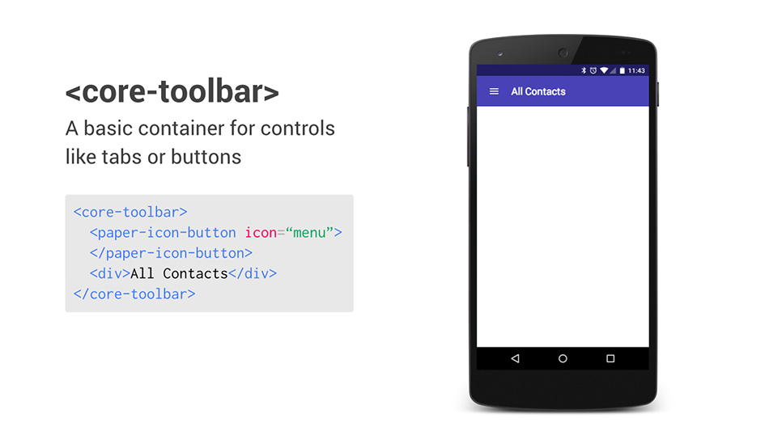

-

Let’s build some apps with Polymer!.
Over the previous year, the Polymer team has spent a lot of time teaching developers how to create their own elements. This has lead to a rapidly growing ecosystem, buoyed in large part by Polymer’s Core and Paper elements, and the Brick elements created by the team at Mozilla.
-
Web Animations Playback Control in Chrome 39.
Earlier this year, Chrome 36 landed the element.animate method as a part of the broader Web Animations spec. This allows for efficient, native animations written imperatively - giving developers the choice to build their animations and transitions with the most suitable.
-
 Fundamentals of Mobile Web Development.
At Chrome Dev Summit 2014 there was a whole host of topics and brand spanking new API’s covered, but its not all about the new and shiny. If you are a new Web Developer or even an experienced developer about to embark on exploring new APIs, chances are you’ll follow these three steps: learn, build and iterate.
Fundamentals of Mobile Web Development.
At Chrome Dev Summit 2014 there was a whole host of topics and brand spanking new API’s covered, but its not all about the new and shiny. If you are a new Web Developer or even an experienced developer about to embark on exploring new APIs, chances are you’ll follow these three steps: learn, build and iterate.
-
 image-rendering: pixelated.
As web developers we play with images all the time and in most cases browsers are great at scaling images to fit the boundaries of our site designs whilst keeping the images pretty. But what happens when you want to control how the browser scales the images on your page?
image-rendering: pixelated.
As web developers we play with images all the time and in most cases browsers are great at scaling images to fit the boundaries of our site designs whilst keeping the images pretty. But what happens when you want to control how the browser scales the images on your page?